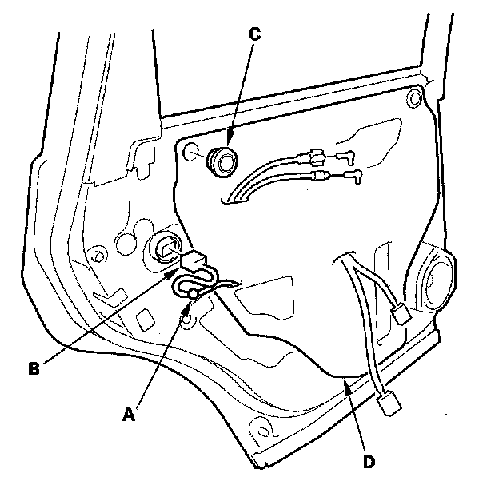
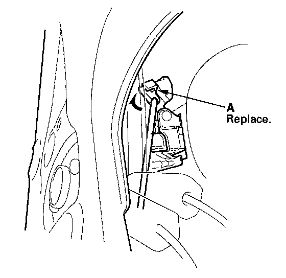
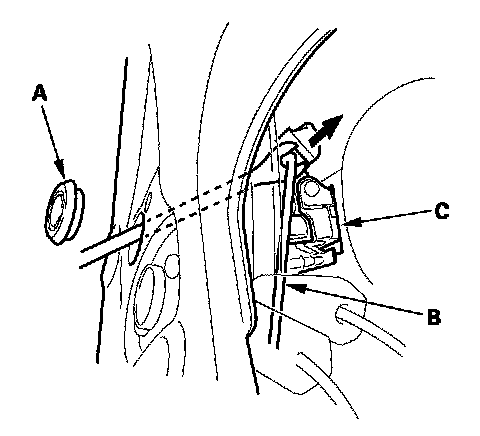
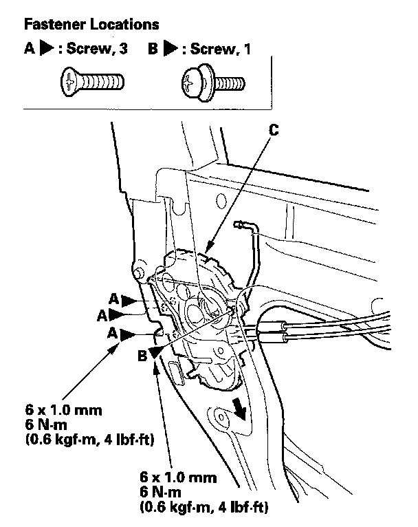
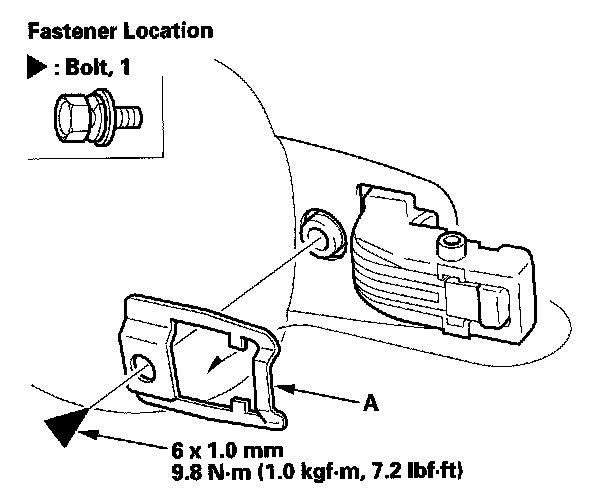
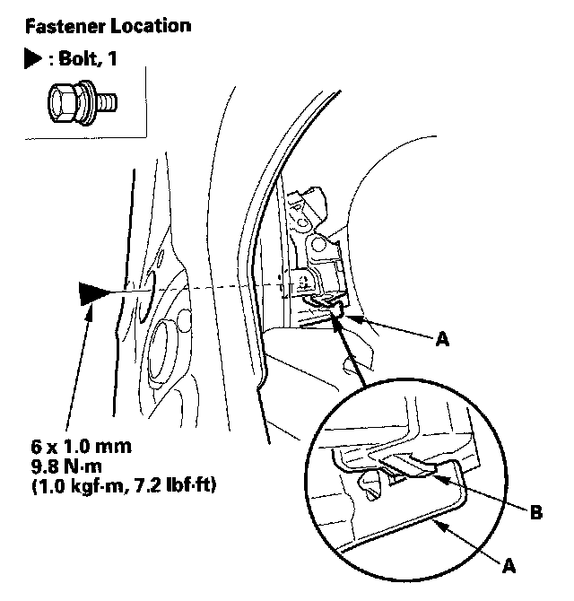
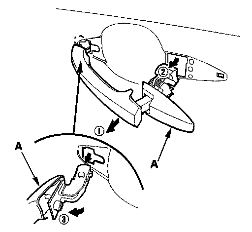
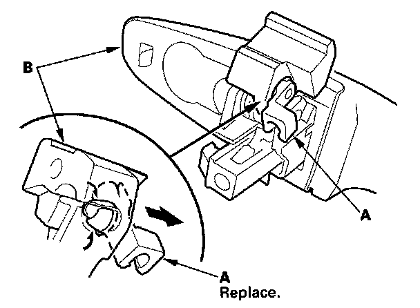

Rear Door Exterior Handle: Service and Repair
Rear Door Outer Handle ReplacementNOTE: Put on gloves to protect your hands.
1. Raise the glass fully.
2. Remove the door panel.

3. Detach the harness clip (A), and disconnect the power door lock actuator connector (B).
4. Remove the rear plug cap (C), then remove the plastic cover (D), as needed.
NOTE: Remove the glue from the door surface. If the plastic cover is damaged or torn, replace it.

5. Detach the rod fastener (A).

6. Remove the maintenance cap (A) with a clip remover, then disconnect the outer handle rod (B) from the outer handle (C).

7. Remove the screws (A, B) securing the latch (C), then lower it.

8. Remove the bolt, then remove the spacer (A).

9. Remove the bolt securing the outer handle protector (A), then remove the protector by releasing the hook (B).

10. While pulling the outer handle (A), remove the handle from the holes in the door panel. Take care not to scratch the door.

11. Remove the rod fastener (A) from the outer handle (B), then replace it with a new one.
12. Install the handle in the reverse order of removal, and note these items:
- Make sure the outer handle rod is connected securely.
- Make sure the door locks operate properly.
- Make sure the door handle works properly.
- When reinstalling the door panel, make sure the plastic cover is installed properly and sealed around its outside perimeter to seal out water.